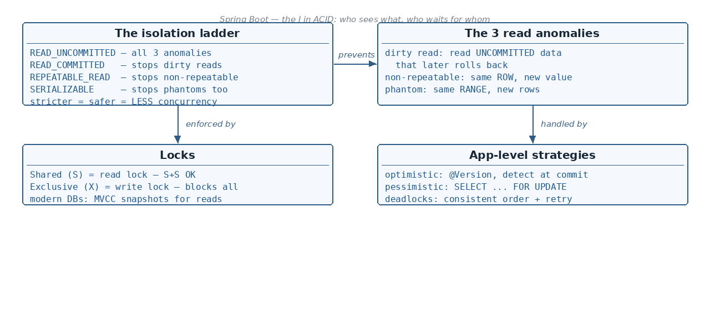

What an isolation level is, and the 4 standard levels compared in one matrix · The 3 read anomalies — dirty read,…
☕ 9 min read · 🎬 Video walkthrough · 📊 UML diagram · 💻 Runnable code
⚡ In a nutshell — What an isolation level is, and the 4 standard levels compared in one matrix · The 3 read anomalies — dirty read, non-repeatable read, phantom read — with timelines · Shared (S) vs Exclusive (X) locks and their compatibility matrix · The locking strategy behind each isolation level ("final thoughts")
Isolation level tells how the changes made by one transaction are visible to other transactions running in parallel.

It is the "I" in ACID, and in Spring you pick it right on the annotation:
@Service
public class BookingService {
@Transactional(propagation = Propagation.REQUIRED,
isolation = Isolation.READ_COMMITTED)
public void bookSeat(long seatId) {
// all queries in this method run at READ_COMMITTED isolation
}
}
Each level allows or prevents the three read anomalies. The stricter the level, the lower the concurrency (more locking):
The default isolation level depends upon the DB which we are using. Most relational databases use READ_COMMITTED as default isolation — but again, it depends upon DB to DB.
Added:
Isolation.DEFAULT(Spring's default) means "use whatever the database uses". MySQL (InnoDB) defaults to REPEATABLE_READ; PostgreSQL, Oracle and SQL Server default to READ_COMMITTED. So the same code can behave differently on different DBs.
Transaction A reads the un-committed data of another transaction — and if that other transaction gets ROLLED BACK, the un-committed data which was read by transaction A is known as a Dirty Read.
Transaction A is now working with Booked — a value that never truly existed in the DB.
Suppose Transaction A reads the same row several times and there is a chance that it gets a different value each time — that is known as the Non-Repeatable Read problem.
Same row, same query, two different answers inside one transaction.
Suppose Transaction A executes some query several times but there is a chance that the rows returned are different. That is known as the Phantom Read problem.
Good to know: non-repeatable read is about an existing row changing value; phantom read is about new rows appearing (or disappearing) for the same range query.
Locking makes sure that no other transaction updates the locked rows.
Lock compatibility — can another transaction take a lock on the same row?
Example 1 — shared locks coexist. More than 1 transaction can put the (S) lock on the same row, and all of them can read the value:
Example 2 — exclusive lock blocks everyone. Once the (X) lock is taken by any transaction, no other transaction could even Read / Write:
Added: in Spring Data JPA you can take these locks yourself (pessimistic locking):
@Lock(LockModeType.PESSIMISTIC_READ)issuesSELECT ... FOR SHARE(shared lock) and@Lock(LockModeType.PESSIMISTIC_WRITE)issuesSELECT ... FOR UPDATE(exclusive lock).
public interface SeatRepository extends JpaRepository<Seat, Long> {
@Lock(LockModeType.PESSIMISTIC_WRITE) // exclusive (X) lock on the selected row
@Query("select s from Seat s where s.id = :id")
Optional<Seat> findByIdForUpdate(@Param("id") long id);
}
READ_UNCOMMITTED — useful for read-only applications; concurrency is high as there is no locking.
READ_COMMITTED
REPEATABLE_READ
SERIALIZABLE
Good to know: a range lock locks the query range (e.g.
ID > 0 and ID < 5), so no other transaction can even INSERT a new row into that range — which is exactly what kills the phantom read.
// Picking the level per use case:
@Transactional(isolation = Isolation.READ_UNCOMMITTED) // reporting, approximations OK
public long roughDashboardCount() { ... }
@Transactional(isolation = Isolation.READ_COMMITTED) // typical OLTP default
public void updateProfile(User u) { ... }
@Transactional(isolation = Isolation.REPEATABLE_READ) // re-reads must be stable
public void reconcileInvoice(long id) { ... }
@Transactional(isolation = Isolation.SERIALIZABLE) // money movement, seat booking
public void transferMoney(long from, long to, BigDecimal amt) { ... }
Added: the lock-based explanation above is the classic textbook (2-Phase-Locking) model. Modern databases (PostgreSQL, MySQL/InnoDB, Oracle) actually implement READ_COMMITTED and REPEATABLE_READ with MVCC (Multi-Version Concurrency Control): every transaction reads a snapshot (an older version of the row) instead of taking a shared lock, so readers never block writers and writers never block readers. Locks are still taken for writes (
UPDATE,SELECT ... FOR UPDATE). Interviewers love this follow-up: "if reads don't lock, how does Postgres avoid dirty reads?" — answer: snapshots, not shared locks.
Added: this whole section. "Which one would you pick and why?" is one of the most common locking interview questions, so it deserves its own section with runnable code.
Two application-level strategies to handle two transactions touching the same row:
@Version column checked on every UPDATE — SELECT ... FOR UPDATE / FOR SHAREOptimisticLockException → retry or fail fast — Other transaction waits (or times out)Optimistic locking — add one annotated field and JPA does the rest:
@Entity
public class Seat {
@Id private Long id;
private String status;
@Version // JPA increments this on every successful update
private Long version;
}
Under the hood every update becomes:
UPDATE seat SET status = 'BOOKED', version = 6
WHERE id = 1 AND version = 5; -- 0 rows updated => someone changed it => exception
If another transaction already bumped version from 5 to 6, our UPDATE matches 0 rows
and JPA throws ObjectOptimisticLockingFailureException (wrapping OptimisticLockException).
Typical handling — retry a few times:
@Service
public class BookingService {
@Retryable(retryFor = ObjectOptimisticLockingFailureException.class,
maxAttempts = 3) // spring-retry
@Transactional
public void bookSeat(long seatId) {
Seat seat = seatRepository.findById(seatId).orElseThrow();
if (!"FREE".equals(seat.getStatus())) throw new SeatTakenException(seatId);
seat.setStatus("BOOKED"); // version check happens on flush
}
}
Pessimistic locking — the @Lock(PESSIMISTIC_WRITE) repository method from section 6
takes the X lock up front; the second transaction simply waits at the SELECT. Set a
timeout so it doesn't wait forever:
@Lock(LockModeType.PESSIMISTIC_WRITE)
@QueryHints(@QueryHint(name = "jakarta.persistence.lock.timeout", value = "3000")) // ms
@Query("select s from Seat s where s.id = :id")
Optional<Seat> findByIdForUpdate(@Param("id") long id); // waits max 3s, then throws
Good to know: optimistic locking is not an isolation level — it works on top of READ_COMMITTED and protects only rows carrying a
@Versioncolumn.
Added: this whole section. A locking chapter without deadlocks is incomplete — "what is a deadlock and how do you avoid it?" is a guaranteed interview question.
A deadlock is two (or more) transactions each holding a lock the other one needs — neither can ever proceed:
How the DB reacts: databases detect the cycle and kill one transaction (the
"victim") so the other can finish. The victim gets an error — MySQL:
Deadlock found when trying to get lock, Postgres: deadlock detected. Spring translates
it to DeadlockLoserDataAccessException (a TransientDataAccessException, i.e. retryable).
How to avoid / survive deadlocks:
@Transactional
public void transfer(long fromId, long toId, BigDecimal amt) {
long first = Math.min(fromId, toId); // always lock the smaller id first
long second = Math.max(fromId, toId);
Account a = accountRepo.findByIdForUpdate(first).orElseThrow();
Account b = accountRepo.findByIdForUpdate(second).orElseThrow();
// ... move the money
}
@Transactional; the longer
locks are held, the bigger the collision window.@Retryable(retryFor = DeadlockLoserDataAccessException.class,
maxAttempts = 3, backoff = @Backoff(delay = 100))
@Transactional
public void transfer(long fromId, long toId, BigDecimal amt) { ... }
@Transactional behaves differently across engines.@Version) is the app-level alternative to raising isolation: readers never block, conflicts fail fast with OptimisticLockException — right choice for low-contention web traffic.SELECT ... FOR UPDATE (@Lock(PESSIMISTIC_WRITE) in JPA) for genuine hot rows (inventory, balances).@Version column, conflict detected at commit (OptimisticLockException → retry); pessimistic = SELECT ... FOR UPDATE, others wait.DeadlockLoserDataAccessException). Avoid: lock in consistent order, short txns, retry.Next topic: @Async and Thread Pools — running methods asynchronously with executors.
👏 Found this useful? Give it a few claps so more developers discover it, and follow for the whole series — every article ships with a UML diagram, runnable code, a narrated video, and a companion PDF. Happy building! 🚀